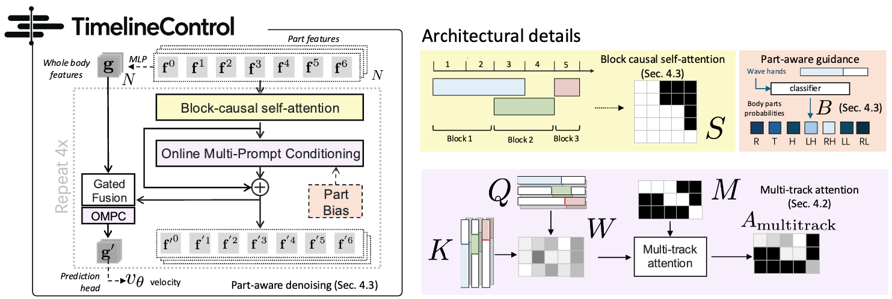

Block-causal attention
Motion features interact within the same generation block while future blocks remain masked, enabling causal streaming generation.
arXiv 2026
Text-driven human motion generation has advanced substantially, yet most methods assume instructions are available before synthesis. Interactive applications require responding to new instructions while continuing ongoing actions, such as answering a phone while walking. Existing approaches address streaming generation or simultaneous composition without explicitly combining streaming instruction arrival with independently timed, overlapping actions. We introduce streaming multi-track timeline control and propose TimelineControl to incorporate new instructions alongside ongoing actions. Interval-aware conditioning preserves instruction timing, while causal part-structured representations and part-aware denoising coordinate concurrent actions across body regions. We also construct TimelineMotion, a dataset with overlapping instruction intervals and body-part annotations. Experiments on TimelineMotion and MTT demonstrate improved semantic alignment and temporal adherence over evaluated streaming baselines, including models retrained on the same data. Ablations and human evaluations validate our design, complemented by spatial conditioning and humanoid execution demonstrations.

Overview of the TimelineControl architecture. We process part features and whole-body features separately (left). The part features undergo block-causal self-attention (yellow). Both use online multi-prompt conditioning (pink, OMPC) to allow for multi-track streaming inference. We add a part bias (orange) to enforce better mapping to body parts. Details (right) show examples of elements used in text
Motion features interact within the same generation block while future blocks remain masked, enabling causal streaming generation.
A body-part relevance predictor identifies which of the six anatomical regions each instruction should guide.
Temporal prompt scores are combined with interval visibility masks, so each motion position attends only to applicable instructions.
We compare TimelineControl with streaming and offline composition baselines on two multi-track motion benchmarks. Each video visualizes the instruction timeline together with the generated motion.
Online interaction
New text instructions can arrive during generation and be incorporated alongside compatible ongoing actions.
Long-horizon generation
A causal sliding window supports continuous motion across many sequential and overlapping instructions.
Multimodal guidance
TimelineControl combines streamed language with root paths, waypoints, heading, body keyframes, end-effector targets, and foot contacts.
Physical deployment
Generated motions are executed on a G1 humanoid in real time through a motion-tracking controller.
If you find this work useful, please cite:
@article{zhang2026timelinecontrol,
title = {Streaming Multi-Track Timeline Control for 3D Human Motion Generation},
author = {Zhang, Yangsong and Muraleedharan, Anujith and Akizhanov, Rikhat and
Varol, G{\"u}l and Pizzati, Fabio and Laptev, Ivan},
journal = {arXiv preprint},
year = {2026}
}We thank helps from public code like ActionPlan, STMC, MotionStreamer, ARDY, KIMODO, SONIC, etc.